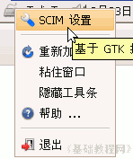
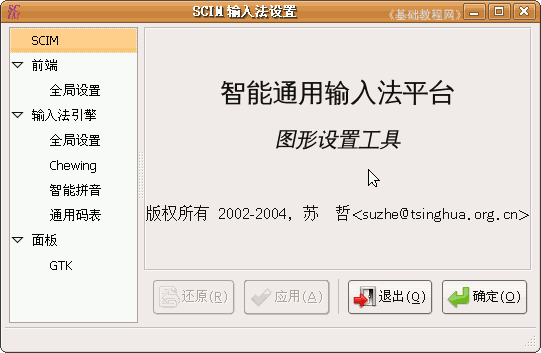
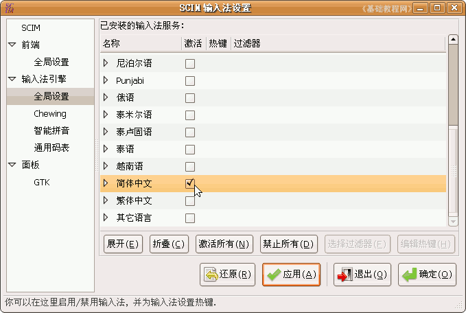
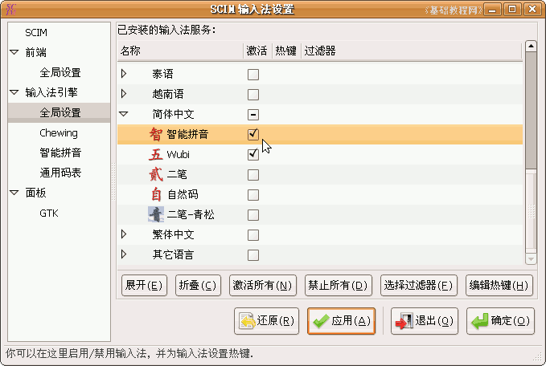
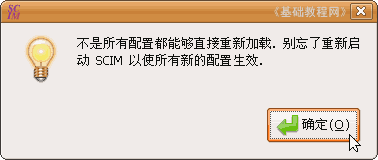
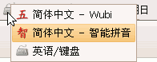

SCIM输入法操作基础
一、删除多余输入法 返回目录
使用上一段时间后，我们可以试着修改一下输入法的设置，以方便更好地使用它，下面我们来 看一个练习；
1、设置输入法
1）找到上面板栏右边的小键盘图标，瞄准敲右键，在出来的菜单中选择“设置”命令；

2）出来一个设置面板，左边是各个设置项目，右边是名称和作者版权等信息；
3）在左边栏里选择第二个输入法引擎里的“全局设置”项，右边出来许多的输入法，
去掉其他语言右边小方框里的勾，只保留下面“简体中文”的勾；

4）点击“简体中文”左边的小空三角折叠按钮，展开中文输入法列表，
去掉其他输入法的勾，保留“智能拼音和五笔(Wubi)”的小勾；
5）点右下角的“确定”按钮，出来一个提示，点“确定”下次开机以后输入法中就只有两个中文输入法了；
 
本节学习了在Ubuntu中设置SCIM中文输入法的 基本方法，如果你成功地完成了练习，请继续学习下一课内容；本教程由86团学校TeliuTe制作|著作权所有
基础教程网：http://teliute.org/
美丽的校园……
转载和引用本站内容，请保留作者和本站链接。